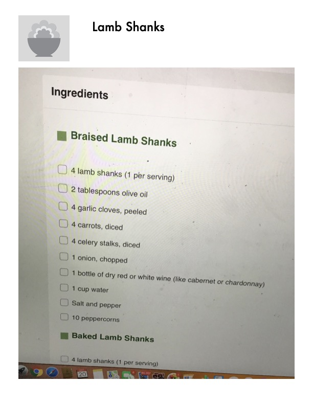

Braised Lamb Shanks - Complete Recipe

Original cookbook page 96
Classic braised lamb shanks cooked slowly in wine with vegetables until tender and falling off the bone. The braising liquid is reduced to create a rich, flavorful sauce.
Prep: 20 minutes • Cook: 2 hours • Total: 2 hours 20 minutes
Ingredients
- 4 lamb shanks (1 per serving)
- 2 tablespoons olive oil
- 4 garlic cloves, peeled
- 4 carrots, diced
- 4 celery stalks, diced
- 1 onion, chopped
- 1 bottle dry red or white wine (like cabernet or chardonnay)
- 1 cup water
- Salt and pepper to taste
- 10 peppercorns
- Optional: 1 teaspoon cornstarch for thickening sauce
Instructions
- Preheat the oven to 325°F (163°C).
- Wash and trim the shanks. Use a sharp knife to remove some of the larger deposits of fat, but don't trim the shanks of all visible fat. The fat will render and contribute to the flavor of the final dish.
- Heat the oil. Pour the oil into a large dutch oven or another oven-safe dish and place it over medium high heat. Allow it to heat completely, until it begins to smoke just slightly.
- Brown the lamb shanks. Season the shanks with salt and pepper on all sides. Place them in the hot oil and brown them on all three sides. Brown each side for about 4 minutes, enough to get a good sear on each side.
- Add the vegetables, peppercorns and wine. Arrange the vegetables and garlic cloves around the lamb shanks, and drop in the peppercorns. Pour the wine over the entire contents of the pot. Let the red wine come to a boil, and boil it for three minutes. Add the water and reduce the heat to bring everything to a quick simmer.
- Cover the dish and transfer it to the oven for braising. If you don't have a tight-fitting lid for the dutch oven, cover it tightly with aluminum foil. Place it in the oven and braise it for 1 hour and 30 minutes. Every half hour, remove it from the oven and turn the shanks so they cook evenly.
- Strain and reduce the braising liquid. Transfer the cooked lamb shanks to a serving platter. Pour the braising liquid through a fine-mesh sieve to strain out the vegetables and keep the liquid. Pour the liquid into a saucepan and cook it over medium heat, stirring often, until it has reduced and become a thick sauce. Season it with salt and pepper to taste. To make the sauce thicker, add a teaspoon of cornstarch.
- Serve the lamb shanks. Pour the braising liquid over the lamb shanks and serve the dish with roasted vegetables or mashed potatoes. Each shank is enough for one serving.
📝 Recipe Notes
Complete recipe combined from pages 96-104. The key to tender lamb shanks is slow braising at low temperature. Don't over-trim the fat as it adds flavor. Turn the shanks every 30 minutes during braising for even cooking. The reduced braising liquid makes an excellent sauce.
Recipe #96 from collection